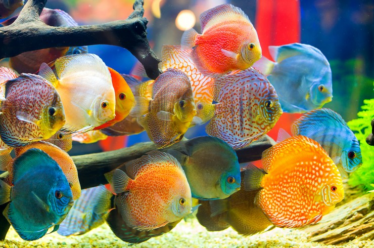

Общие сведения
На данный момент существует несколько вариантов систематики природных подвидов дискусов. С 1904 года в систематике цихлид появился вид Symphysodon discus, объединяющий известные на тот момент природные вариации признаков как подвиды: дискус Хеккеля Symphysodon discus Heckell, 1840 В 1960 году американский ихтиолог Леонард Шульц опубликовал в журнале «Tropical Fish Hobbyist» результаты его ревизии рода. Данная публикация, в которой Symphysodon aequifasciata[6] был выделен в самостоятельный вид и были описаны два его новых подвида, содержала большое количество неточностей и противоречий, одна предложенная система из четырёх видов прочно вошла в тогдашний обиход. Symphysodon discus Heckell, 1840 дискус Хеккеля S. discus discus Heckel, 1840 дискус равнополосый Symphysodon aequifasciata Pellegrin, 1904 зелёный дискус S. aequifasciata aequifasciata Pelegrin, 1904 коричневый дискус S. aequifasciata axelrodi Shultz, 1960 голубой дискус S. aequifasciata haraldi Shultz, 1960 В последующей ревизии систематики, проведённой Свеном Кулландером, было устранено деление на подвиды. Его книга «Цихловые рыбы перуанской части бассейна Амазонки», изданная в 1986 году, радикально изменила ряд аспектов в таксономии южно-американских цихлид, включая род Symphysodon. В ней и более поздних статьях Кулландер признавал валидными только 2 вида: Symphysodon discus Heckel, 1840 и Symphysodon aequifasciatus Pellegrin, 1904, а все остальные описания рассматривал как младшие синонимы.

Внешний вид
Биотопы бассейна Амазонки в течение года претерпевают существенные перемены. С наступлением в декабре сезона дождей происходит разлив Амазонки. Тропические ливни и талые воды с высокогорий поднимают уровень воды в русле реки. Вода во многих притоках в это время меняет направление течения на обратное, пока разливающаяся река не затопит огромные территории. В водоёмы с кристально чистой водой паводки приносят мутную глинистую воду. Окружающий Амазонку затопленный лес превращается в единое медленно текущее болото. К маю проливные дожди прекращаются. В воды затопленного леса перестаёт поступать речная вода и они постепенно становятся прозрачными. С июля в течение нескольких месяцев уровень воды значительно снижается. Появляется много изолированных водоёмов и небольших ручьёв, в которых вода приобретает чистоту и характерный тёмный цвет. Параметры воды в таких водоёмах могут достигать предельных значений мягкости, отсутствия электропроводности, стерильности. По свидетельству Х. Блехера, дискусы обитают в «чёрной» воде среди зарослей прибрежных кустарников, где дно водоёмов устлано слоем гниющих листьев. Вода очень мягкая и довольно кислая. Корни прибрежной растительности большую часть года находятся под водой и служат укрытием и субстратом для нереста. С уменьшением уровня воды рыба покидает укрытия и уходит на глубину, к центру водоёмов.
Ареал обитания
Дискусы популярны в аквариумном рыбоводстве. Относятся к числу наиболее красивых аквариумных рыб. В Европе дискусы появились после Первой мировой войны; получили распространение у европейских аквариумистов с 1921 г. Впервые потомство получено в неволе, по разным источникам в 1933—1936 годах в Германии. В любительском аквариуме разведены в 1956 году в ГДР. В СССР дискусы впервые были завезены в 1957 году, но обеспечить правильные условия содержания не удалось. Рыбы повторно были ввезены в СССР в 1962 году и разведены в Эстонии. В числе прочих аквариумных рыб, экспортируемых из Бразилии в огромных количествах, значительная доля представлена дискусами. Хотя для любительского аквариума особи природного происхождения интереса не представляют, по причине
Виды
В течение истории содержания дискусов в аквариумах их разведение считалось высшим достижением в любительском рыбоводстве. Опыт, накопленный к настоящему времени в разведении дискусов, выделяет как основную сложность подбора хорошей пары производителей. Как правило, получение потомства от устоявшихся пар не представляет затруднений. Проблемы формирования хорошей пары могут проявиться на разных этапах воспроизводства:
Красный дискус (Symphysodon discus)
В особо запущенных ситуациях может наблюдается почти полная потеря окраски дискусом. В природе вырастает до 20 см, в аквариумах размер обычно не превышает 10-15 см. Половой диморфизм выражен слабо. В основу природного рациона входит зоо- и фитопланктон, а также детрит в засушливый период.

Зеленый дискус (Symphysodon tarzoo)
По спинному плавнику проходит широкая черная полоса. Морфологически этот вид дискуса отличается от других наличием на теле и плавниках красноватых точек, которые проявляются у рыб в возрасте полугода. Половой диморфизм не выражен. Средний размер зеленого дискуса в аквариуме – 13 см.

Дискус равнополосый (Symphysodon aequifasciatus)
По спинному и анальному плавнику проходит полукругом широкая темная полоса. Окраска тела может меняться в зависимости от состояния рыбки. Отличить самку дискуса от самца довольно проблематично. Существует несколько подвидов Symphysodon aequifasciatus с характерной окраской – коричневый и голубой дискусы. Определить точный вид дискуса в аквариуме практически невозможно ввиду того, что многолетняя работа селекционеров привела к появлению большого количества цветовых вариаций. Половой диморфизм у этих рыб не выражен.
Уход и содержание
Рыбы чувствительны к чистоте аквариумной воды и к размерам аквариума. Рекомендуются аквариумы объёмом от 200 литров и еженедельной заменой 30 % воды. Исключительную важность имеет стабильность активной реакции воды pH: резкие колебания могут оказать непоправимый ущерб здоровью рыб. Освещение аквариума умеренное с затенёнными участками. Температура воды 28—32 °C.

Совместимость
Дискусы — рыбы не агрессивные и не представляют угрозы для других обитателей аквариума. Проблема совместимости может заключаться в большей теплолюбивости дискусов по сравнению с большинством популярных аквариумных рыб. Если целью аквариумиста являются максимально благоприятные условия для содержания дискусов, предпочтительным будет отдельный, предназначенный только для дискусов аквариум. Вопреки выраженному внешнему сходству со скаляриями, дискусы плохо переносят соседство с последними. Резкий и значительно более задиристый характер скалярий не позволяет рекомендовать их для совместного содержания с дискусами.
Кормление
Рыбы чувствительны к чистоте аквариумной воды и к размерам аквариума. Рекомендуются аквариумы объёмом от 200 литров и еженедельной заменой 30 % воды. Исключительную важность имеет стабильность активной реакции воды pH: резкие колебания могут оказать непоправимый ущерб здоровью рыб. Освещение аквариума умеренное с затенёнными участками. Температура воды 28—32 °C.

Разведение
Из приведённого выше перечня только две первые проблемы трудно решаемы техническими средствами, подбором условий и показателей воды. Современная аквариумистика предусматривает способы сохранения кладки путём изолирования производителей с последующим самостоятельным уходом за мальками или путём размещения над субстратом сетки, позволяющей свободный ток воды над икрой и в то же время препятствующей уничтожению икры производителями. Ранние попытки разведения диска включали отделение родителей от их икры, что является ошибкой, так как мальки первое время питаются пролактином, индуцированным их родителями, секретоцитами (специализированными клетками) в качестве исходного источника питания (а не слизи тела родителей)[15]. Температура воды в период размножения должна быть 30—32, при 26 градусах икра практически не проклёвывается, и производители бросают кладку. В отношении прочих показателей дискусы не требовательны. Повышенная жёсткость воды снижает оплодотворяемость икры, поэтому именно на период размножения для дискусов рекомендуется мягкая вода. В качестве нерестовика можно использовать отдельный аквариум объёмом от 100 литров, без грунта и растений. В качестве субстрата хорошо подходят цветочные керамические горшки или специальные керамические конусы. Рыбы могут облюбовать и менее подходящие предметы: вертикально расположенный обогреватель или стенку внутреннего фильтра. В отношении своего выбора пара может проявлять упорное постоянство. Замена воды в нерестовике производится в обычном режиме.
lorem*20